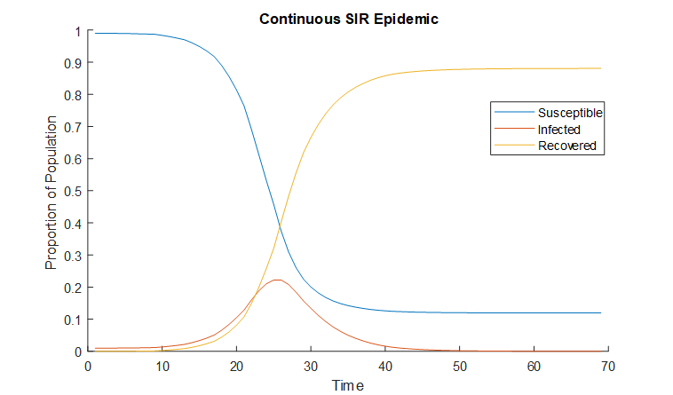
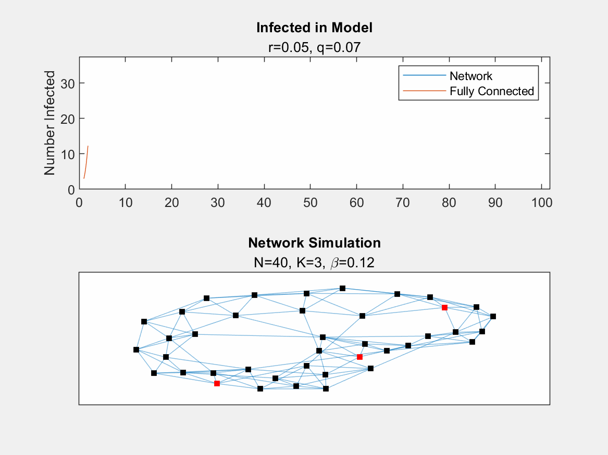
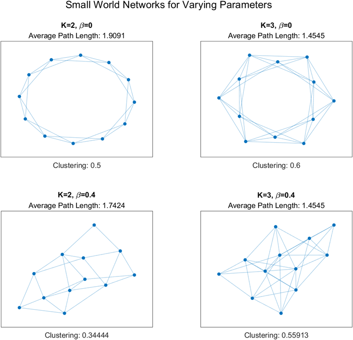
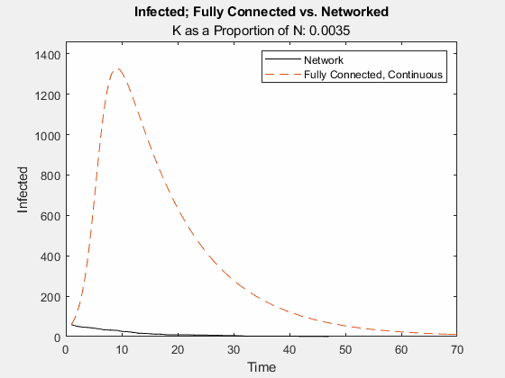
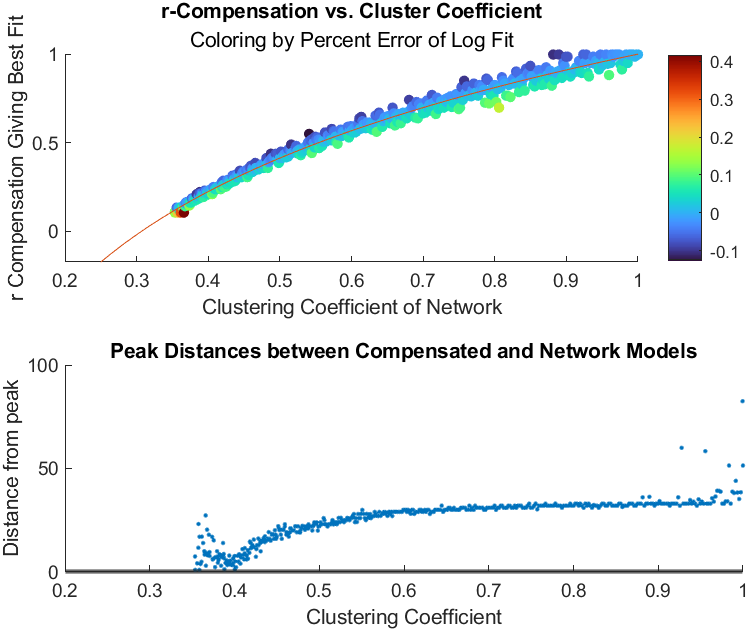

The continuous SIR model is a fundamental framework used in epidemiological modeling to understand and simulate the spread of infectious diseases within a population. In this basic model, individuals within the population are classified into three compartments: susceptible (those who are susceptible to contracting the disease), infectious (those who are currently infected and can transmit the disease to others), and recovered (those who have recovered from the infection and gained immunity).
The model assumes a continuous and homogeneous mixing of individuals, meaning that every individual has an equal chance of interacting with any other individual in the population. The spread of the disease is described using a set of ordinary differential equations that represent the rates of change of individuals moving between the susceptible, infectious, and recovered compartments over time.
Due to the dynamics of these equations, the evolution of the populations is standard. Using normal parameter values, the proportion of infected spikes from some low value as the infection spreads, then levels off to zero as the population recovers. Some proportion of the population may remain unexposed, as in the graph below.
SIR on a network takes into account a more realistic structure: not every person interacts with every other person, but rather a small subset of the population. Models using networks are significantly different from simple continuous models: they are typically probabilistic and use discrete time scales. They are very sensitive to initial conditions (possibly chaotic). To model the underlying population network, a much larger number of parameters must be approximated. Finally, it can be much more expensive to simulate.
Due to the structure of the network and the lack of full 'connectedness', the spread of the disease is slowed. This should seem reasonable; imagine the spread of some contagion in a crowded gymnasium during a party versus in a small rural community. Below is a graphic demonstrating this slowdown. The orange curve represents the number of infected individuals in our fully packed gymnasium, which is a standard continuous model. In the blue curve, we have our network for a small community (this can be thought of as a 'flattened curve' in COVID-era terms). In the lower half of the image, the spread of the disease may be observed. Red nodes represent infected individuals, and at each discrete time step, they have a chance to infect other individuals to which they are connected. As the contagion 'discovers' well-connected individuals, it spreads more quickly, while in poorly-connected regions, it languishes.
In generating our networks, we used a handful of parameters which are helpful to discuss here:
| N | The total number of nodes in the network; the population. |
|---|---|
| K | The starting number of connections each node has to other nodes. |
| \(\beta\) | The rewiring probability, which adds some degree of randomness to the network. |
The networks generated using the parameters give rise to further metrics: the average path length, and the clustering coefficient. Finally, it's helpful to discuss another metric for how "connected" the network is. As the maximum of \(K\) is \((N-1)/2\) (think: one connection connects two nodes), a naive metric is \(K/N\). An entirely unconnected network will have \(K/N=0\), and a fully connected network \(K/N=0.5\).
Below, some example networks are shown, demonstrating the impact of these parameter choices.
We can examine what happens as this proportion increases, from poorly-connected to entirely-connected. In the graphic below, the orange dashed line represents the quantity of infected over time in a normal, continuous model. The black line represents the same quantity, but in a network simulation. It may be seen that as the network approaches entirely-connected, the evolution of the quantity of infected begins to closely resemble the simpler model's evolution. We can think of the removal of connections as introducing a 'drag' on the contagion, slowing it's spread.
Another metric is the clustering coefficient, or CC.
We can imagine compensation for this network drag by altering parameters in the continuous model. This compensation is informed by the clustering coefficient of the network, and alters the parameters of the continuous model which can be thought of as the likelihood of an interaction between a sick and well individual resulting in a new infection. We can change our original equation:
It looks like there is a sweet spot. We can move through the r_c values for each networked simulation, and try to minimize the distance between when the peaks occur. We'll run a simulation like this for networks with many different densities, and see how the compensation performs.
In the top graph, we look at the general trend of r_c values giving the best fit. Along the horizontal axis is the clustering coefficient describing the density of the network, and on the vertical is the r_c value giving the least distance between infection peaks. Noticing they appear to match a logarithmic graph, we perform a logarithmic regression, and plot this regression line. Finally, we color each point by the regression error.
In the bottom graph, we explore for regions of poor fit of the logarithmic trend. For clustering coefficients below about 0.4, or above about 0.9, we see relatively high or unstable distances. On the lower end, random rewiring introduces chaos; some nodes are extremely well connected, and some barely connected. Which nodes end up randomly selected to be initially infected play a large role in how fast the infection spreads. On the opposite end, the network is nearly completely connected, and the probabilistic component of the networked model dominates, creating unstable behavior. In these regions, compensatory fitting is not well-suited.